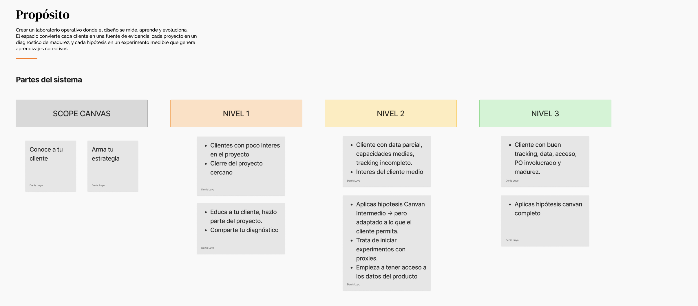
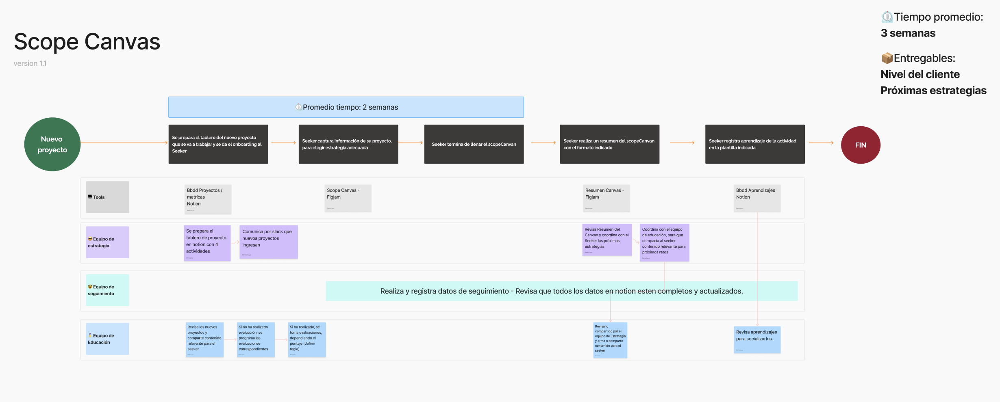
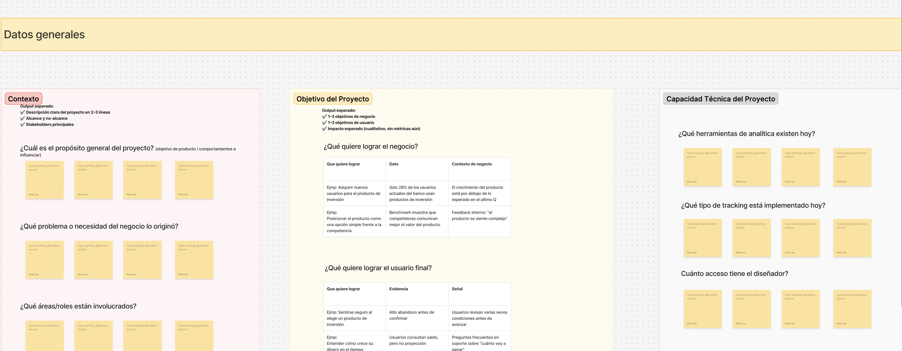
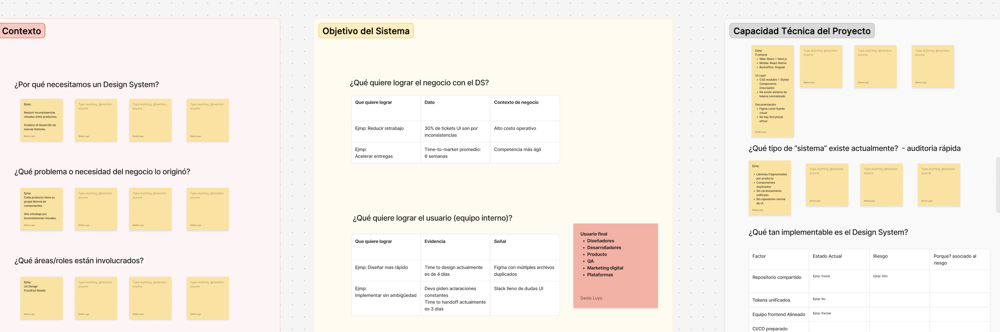

Instalar un punto de partida común: diagnosticar al cliente antes de hablar de métricas, para que el diseño pueda proponer estrategias realistas y medibles desde el día 1.
En la consultora, necesitábamos que los clientes perciban el impacto del diseño en métricas de negocio. Sin un diagnóstico inicial, el trabajo arrancaba con supuestos y la conversación se quedaba en “entregables”, no en resultados.
Mi Aporte
Lideré la investigación de buenas prácticas y sintetice aprendizajes de proyectos previos. Diseñé y estandaricé el Scope Canvas (v1.0), preparé plantillas de inducción para Product Designers y lo piloté en 3 proyectos para validar su uso.
Scope Canvas como punto de partida

Sistema: Cómo conecto diagnóstico → objetivos → métricas → hipótesis → aprendizaje dentro del framework.

Scope Canvas: Plantilla para capturar contexto del cliente, metas, restricciones y criterios de éxito antes de diseñar.

Para que fue creado: Estandariza el arranque del trabajo del equipo y facilita alineación interna.

Scope para Sistemas de diseño: Punto de partida para entender un proyecto de DS
Pedido, decisión clave y proceso
Pedido
Me solicitaron un framework que permita evidenciar el trabajo del área y asegurar que cada diseño apunte a métricas de negocio.
Decisión clave
Definí que el inicio no es “medir”, sino diagnosticar si el cliente está listo para trabajar con métricas y qué estrategia de diseño corresponde a ese nivel.
Proceso (v1.0)
Investigación → matriz + experiencia → borrador con IA → workshops → versión 1.0 + plantillas de inducción.
Resultados en Cifras
Proyectos piloto
Lo implementé con inducción previa para Product Designers y plantillas de aprendizaje.
Pasos de construcción
De investigación a workshops, hasta cerrar la versión 1.0 del canvas.
Adopción inicial
Los proyectos integraron el Scope Canvas después de la demo interna.
El valor de la evidencia
Cierre de ciclo
- El diagnóstico del cliente es el “primer entregable”: define si está listo para métricas y qué nivel de acompañamiento necesita.
- Un canvas estandarizado reduce supuestos y mejora la conversación con negocio desde el inicio.
- El siguiente paso es sumar un plan de medición para versiones futuras, además de las plantillas de aprendizaje.